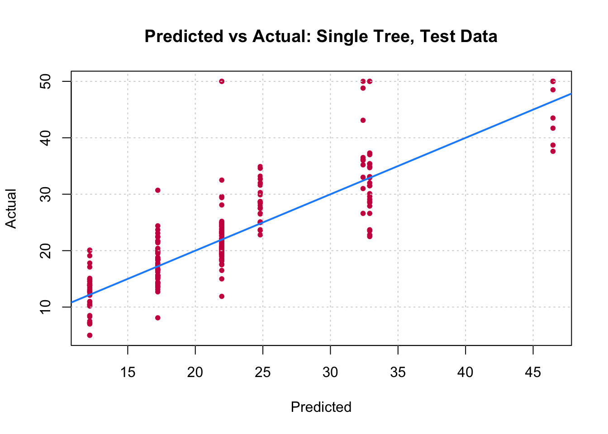
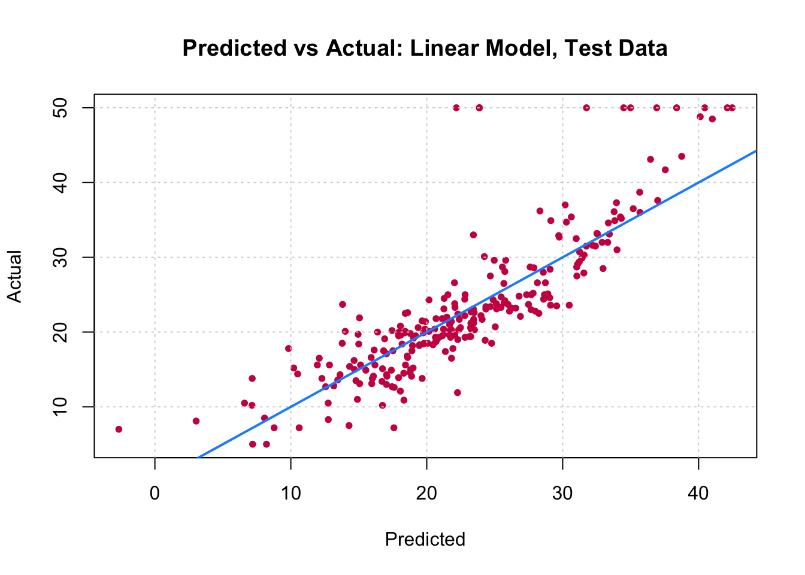
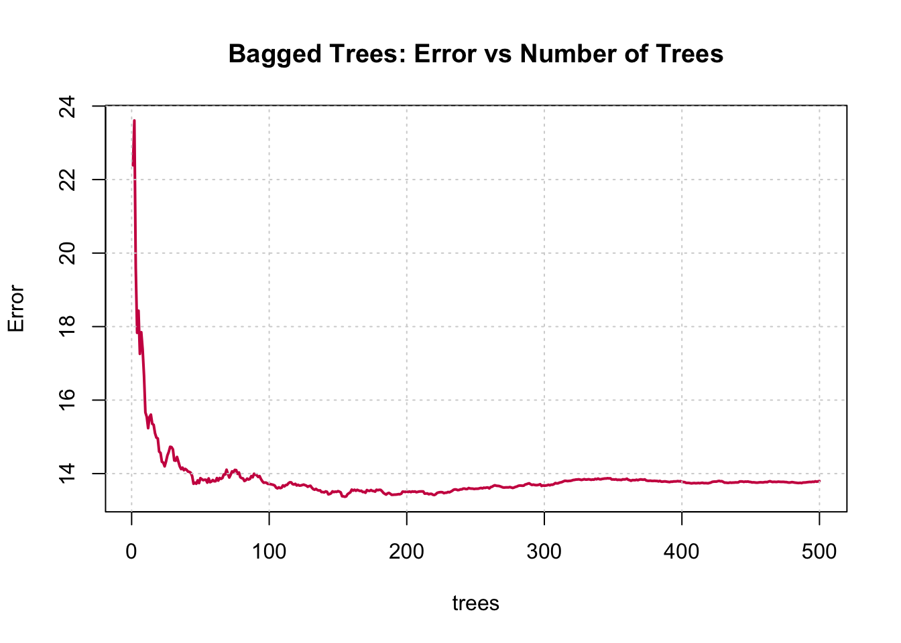
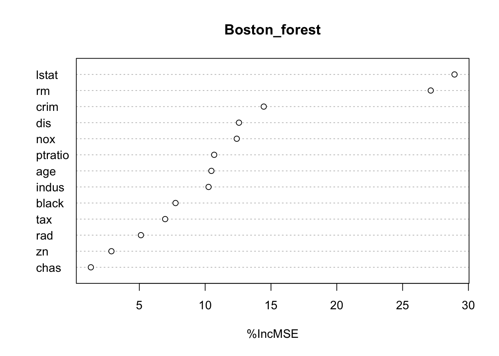
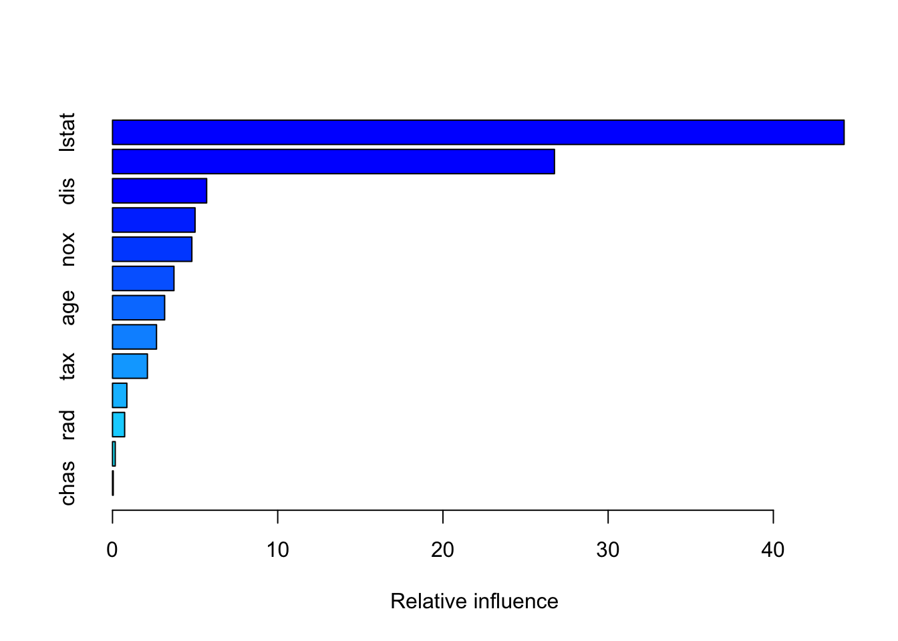
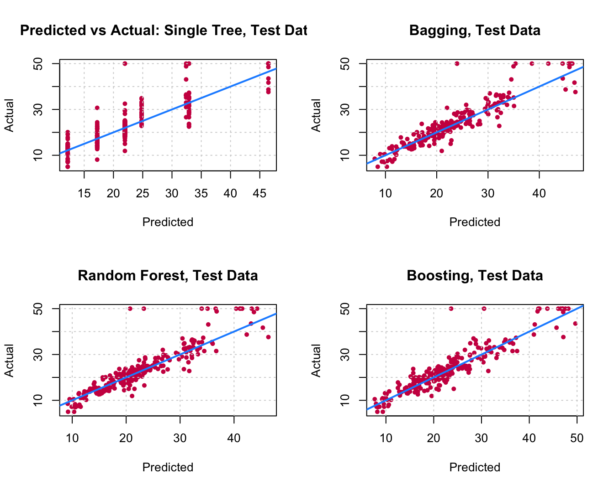

library(MASS)
library(caTools)
set.seed(18)
Boston_idx = sample(1:nrow(Boston), nrow(Boston) / 2)
# You don't know what we just did?
# open the documentation of the function sample by
# writing ?sample in the R console.
# Note that this is one of the ways to split it randomly and it is not necessary the best.
Boston_train = Boston[Boston_idx,]
Boston_test = Boston[-Boston_idx,]Lab3: Decision Trees and Random Forests
Before starting this lab you must finish the last part of Lab 2, about Regularization.
The codes given in the first part of this Lab are in in . You are free to apply this part in or Python. It is up to you to adapt them if you use Python.
In this Lab, we will build some decision trees for both regression and classification problems.
In R
Note that there are many packages to do this in . The tree package is the basic package to do so, while the rpart1 package seems more widely suggested and provides better plotting features. So we will use the rpart package.
Note
It is recommended for correct and better using of functions that you consult their documentations. Every function is well documented indeed. You can do so by writing ?function_name or help(function_name)in the console.
Especially for functions with multiple use, for example, glm() is a function that fits generalizes linear models, one of them is logistic regression when type = "binomial".
Another example, is the function predict(), that is a generic function for predictions from the results of various model fitting functions. Its first argument is a object, a model, and the rest of the arguments depends on the nature of the object. If you want to consult the documentation about using predict() for a tree built with rpart(), do ?predict.rpart or help(predict.rpart)
Tip
If you want to run a function from a certain package without loading the package, you can write package::function(). For example MASS::lda() or rpart::rpart(). It is also helpful to remember the name of the package in which the function is defined.
In Python
In scikit-learn, DecisionTreeClassifier is a class capable of performing multi-class classification on a dataset. plot_tree() is a function to plot a decision tree. You can also visualize Decision Tree with graphviz package or also dtreeviz package. Some sources: [1 🔗], 2 🔗, [3 🔗].
Regression Trees
For building trees for regression we are going to use the Housing dataset, (know also as Boston dataset). In the Housing dataset, there is 13 features and one target variable, described as follows:
- crim: per capita crime rate by town.
- zn: proportion of residential land zoned for lots over 25,000 sq.ft.
- indus: proportion of non-retail business acres per town.
- chas: Charles River dummy variable (= 1 if tract bounds river; 0 otherwise).
- nox: nitrogen oxides concentration (parts per 10 million).
- rm: average number of rooms per dwelling.
- age: proportion of owner-occupied units built prior to 1940.
- dis: weighted mean of distances to five Boston employment centres.
- rad: index of accessibility to radial highways.
- tax: full-value property-tax rate per $10,000.
- ptratio: pupil-teacher ratio by town.
- black: 1000(Bk - 0.63)^2 where Bk is the proportion of blacks by town.
- lstat: lower status of the population (percent).
And the target variable:
- medv: median value of owner-occupied homes in $1000s.
Single tree
To demonstrate regression trees, we will use the Boston dataset that we used during the first two practical works, from the MASS package. Recall that medv is the response.
1. Load the dataset and split it randomly in half.
In , load it from MASS package.
In Python, load it from sklearn’s datasets.
from sklearn import datasets
# Loading the Housing dataset
boston= datasets.load_boston()
# Create feature matrix
X = boston.data
print(X.shape)
# Create target vector
y=boston.target
print(y.shape)
# Then use train_test_split()2. Fit a regression tree to the training data using the rpart() function from the rpart package. Name the tree Boston_tree.
3. Plot the obtained tree using the following code.
4. A better plot can be obtained using the rpart.plot2 package. Re-plot the tree using it. You can use the rpart.plot() function which by default, when the output is continuous, each node shows: the predicted value, and the percentage of observations in the node. You can also use the prp() function.
5. Print the obtained tree and print its summary. Between the things that you can see in the summary, the CP (complexity parameter) table and the importance of each variable in the model. Print the CP table using the printcp() function to see the cross validation results. Plot a comparison figure using the plotcp() function.
You will notice the obtained tree is pruned. This is because rpart prunes the tree by default by performing 10-fold cross-validation.
Note
rpart keeps track of something called the complexity of a tree. The complexity measure is a combination of the size of a tree and the ability of the tree to separate the classes of the target variable. If the next best split in growing a tree does not reduce the tree’s overall complexity by a certain amount, rpart will terminate the growing process. This amount is specified by the complexity parameter, cp, in the call to rpart(). Setting cp to a negative amount (like -1) ensures that the tree will be fully grown. You can try it and then plot the tree.
Notice that the default cp value may over prune the tree. As a rule of thumb, it’s best to prune a decision tree using the cp of smallest tree that is within one standard deviation of the tree with the smallest xerror. In the example above, it’s maybe best to prune the tree with a cp slightly greater than 0.03.
Next we will compare this regression tree to a linear model and will use RMSE as our metric. RMSE is the Root Mean Square Error, which is the square root of the MSE.
5. Write a function that returns the RMSE of two vectors.
6. Use the function predict() to predict the response on the test set. Then calculate the RMSE obtained with tree model.
7. Fit a linear regression model on the training set. Then predict the response on the test set using the linear model. Calculate the RMSE and compare the performance of the tree and the linear regression model.
Note
Here the most obvious linear regression beats the tree! We’ll improve on this tree by considering ensembles of trees.
You can visually compare the performance of both models by plotting the Actual (reality) response values against the predicted values. The model with closer points are to the diagonal (y=x) line is the better one. You can try to reproduce the figure below.


By aggregating many decision trees, using methods like bagging, random forests, and boosting, the predictive performance of trees can be substantially improved. We will now use these concepts, called ensemble methods.
Bagging
Bagging, or Bootstrap aggregation, is a general-purpose procedure for reducing the variance of a statistical learning method, it is particularly useful and frequently used in the context of decision trees. The idea is to take many training sets from the population, build a separate prediction model using each training set, and average the resulting predictions. Generally we do not have access to multiple training sets. Instead, we can bootstrap, by taking repeated samples from the (single) training data set.
To apply bagging to regression trees, we simply construct \(B\) regression trees using B bootstrapped training sets, and average the resulting predictions. These trees are grown deep, and are not pruned. Hence each individual tree has high variance, but low bias. Averaging these \(B\) trees reduces the variance.
8. Fit a bagged model, using the randomForest() function from the randomForest package.
Important
Bagging is actually a special case of a random forest where mtry is equal to \(p\), the number of predictors.
9. Predict the response on the test set using the bagging model. Calculate the RMSE. Is the performance of the model better than linear regression or a simple tree?
Note that the “Mean of squared residuals” which is output by randomForest() is the Out of Bag3 estimate of the error. Here is its plot:

Random Forests
Now try a random forest. For regression, on suggestion is to use mtry equal to \(p/3\).4
10. Fit a random forest on the training set and compare its performance with the previous models by calculating the predictions and the RMSE.
11. Use the function importance() from the randomForest package to see the most important predictors in the obtained random forest model. What are the three most important predictors? Did you find the same results when you selected the best predictors for the linear regression model during session 2?
12. Plot the importance of the predictors to the model using the varImpPlot() function.

Boosting
Last and not least, let us try a boosted model, which by default will produce a nice variable importance plot as well as plots of the marginal effects of the predictors. To do so, we will use the gbm package5.
10. Using the gbm() function like following, fit a boosted model on the training set. Then compare its performance with the previous models by calculating the predictions and the RMSE.
Loaded gbm 2.1.8Boston_boost = gbm(medv ~ ., data = Boston_train, distribution = "gaussian",
n.trees = 5000, interaction.depth = 4, shrinkage = 0.01)Boston_boost_pred = predict(Boston_boost, newdata = Boston_test)Using 5000 trees...rmse(Boston_boost_pred, Boston_test$medv)[1] 3.65662211. Show the summary of the boosted model. A figure of the variable importance will be shown.
summary(Boston_boost)
var rel.inf
lstat lstat 44.28292729
rm rm 26.75013094
dis dis 5.69907146
crim crim 4.99715134
nox nox 4.80328525
black black 3.72041629
age age 3.15666045
ptratio ptratio 2.66396487
tax tax 2.11304970
indus indus 0.86895517
rad rad 0.73545313
zn zn 0.16493067
chas chas 0.04400344Comparison
12. Reproduce the following comparison: A table in which we show the obtained RMSE with each tested model, you can create a \(5 \times 2\) data.frame in which you put the names of the models and the corresponding RMSE. To visualize the data frame in the compiled html report you can use the kable() function from the knitr package. Or, compare the models by plotting the Actual (reality) response values against the predicted values.
par(mfrow=c(2,2))
plot(Boston_tree_pred, Boston_test$medv,
xlab = "Predicted", ylab = "Actual",
main = "Predicted vs Actual: Single Tree, Test Data",
col = "#cd0050", pch = 20)
grid()
abline(0, 1, col = "dodgerblue", lwd = 2)
plot(Boston_bagging_pred, Boston_test$medv,
xlab = "Predicted", ylab = "Actual",
main = "Bagging, Test Data",
col = "#cd0050", pch = 20)
grid()
abline(0, 1, col = "dodgerblue", lwd = 2)
plot(Boston_forest_pred, Boston_test$medv,
xlab = "Predicted", ylab = "Actual",
main = "Random Forest, Test Data",
col = "#cd0050", pch = 20)
grid()
abline(0, 1, col = "dodgerblue", lwd = 2)
plot(Boston_boost_pred, Boston_test$medv,
xlab = "Predicted", ylab = "Actual",
main = "Boosting, Test Data",
col = "#cd0050", pch = 20)
grid()
abline(0, 1, col = "dodgerblue", lwd = 2)
Classification Trees
A classification tree is very similar to a regression tree, except that the classification tree is used to predict a qualitative response rather than a quantitative one. Recall that for a regression tree, the predicted response for an observation is given by the mean response of the training observations that belong to the same terminal node. In contrast, for a classification tree, we predict that each observation belongs to the most commonly occurring class of training observations in the region to which it belongs.
The Toy Dataset
In order to better understand how a decision tree processes the feature space, we will first work on a simulated dataset.
plt.figure(figsize=(5, 5))
x1 = np.random.multivariate_normal([2,2], [[0.1,0],[0,0.1]], 50)
x2 = np.random.multivariate_normal([-2,-2], [[0.1,0],[0,0.1]], 50)
x3 = np.random.multivariate_normal([-3,3], [[0.1,0.1],[0,0.1]], 50)
X1 = np.concatenate((x1,x2,x3), axis=0)
y1 = np.random.multivariate_normal([-2,2], [[0.1,0],[0,0.1]], 50)
y2 = np.random.multivariate_normal([2,-2], [[0.1,0],[0,0.1]], 50)
y3 = np.random.multivariate_normal([-3,-3], [[0.01,0],[0,0.01]], 50)
X2 = np.concatenate((y1,y2,y3), axis=0)
plt.plot(X1[:,0],X1[:,1], 'x', color='blue', label='class 1')
plt.plot(X2[:,0], X2[:,1], 'x', color='orange', label='class 2')
plt.legend(loc=(0.4, 0.8), fontsize=12)What do you expect the decision boudaries to look like ?
Fill-in the following code to train a decision tree on this toy data and visualize it.
Change the splitter to random, meaning that the algorithm will consider the feature along which to split randomly (rather than picking the optimal one), and then select the best among several random splitting point. Run the algorithm several times. What do you observe?
# Training data
X_demo = np.concatenate((X1, X2), axis=0)
y_demo = np.concatenate((np.zeros(X1.shape[0]), np.ones(X2.shape[0])))
# Train a DecisionTreeClassifier on the training data
clf = # TODO
# Create a mesh, i.e. a fine grid of values between the minimum and maximum
# values of x1 and x2 in the training data
plot_step = 0.02
x_min, x_max = X_demo[:, 0].min() - 1, X_demo[:, 0].max() + 1
y_min, y_max = X_demo[:, 1].min() - 1, X_demo[:, 1].max() + 1
xx, yy = np.meshgrid(np.arange(x_min, x_max, plot_step),
np.arange(y_min, y_max, plot_step))
# Label each point of the mesh with the trained DecisionTreeClassifier
Z = clf.predict(np.c_[xx.ravel(), yy.ravel()])
Z = Z.reshape(xx.shape)
# Plot the contours corresponding to these labels
# (i.e. the decision boundary of the DecisionTreeClassifier)
cs = plt.contourf(xx, yy, Z, cmap=plt.cm.Paired)
# Plot the training data
plt.plot(X1[:,0], X1[:,1], 'x', label='class 1')
plt.plot(X2[:,0], X2[:,1], 'x', label='class 2')
plt.legend()Spam Dataset
In this section, we will use the spam6 dataset, available here . A description of the dataset is given below.
This dataset consists of information from 4601 email messages, in a study to try to predict whether the email was junk email, or “spam”. For all 4601 email messages, the true outcome, spam or not, is available, along with 57 predictors as described below:
- 48 quantitative predictors: the percentage of words in the email that match a given word. Examples include business, address, internet; etc.
- 6 quantitative predictors: the percentage of characters in the email that match a given character. The characters are
;,(,[,!,$and#. - The average length of uninterrupted sequences of capital letters:
crl.ave. - The length of the longest uninterrupted sequence of capital letters:
crl.long. - The sum of the length of uninterrupted sequences of capital letters:
crl.tot.
Important
Note that the spam dataset given here is already treated and ready to be explored. To achieve this stage, some steps are required to treat the raw data, like Tokenization, Stemming, and Lemmatization. In this dataset the most important words are already selected and other variables are added. Curious students can read more about these steps. Two famous packages for text mining are tm and tidytext.
Tuning
So far in this lab, we fit bagging, boosting and random forest models, but did not tune any of them, we simply used certain, somewhat arbitrary, parameters. Actually, to make these models better the parameters should be tuned. The parameters include:
- Bagging: Actually just a subset of Random Forest with
mtry= \(p\). - Random Forest:
mtry - Boosting:
n.trees,interaction.depth,shrinkage,n.minobsinnode
The caret package in R provides excellent functions to accomplish this. Note that with these tree-based ensemble methods there are two resampling solutions for tuning the model:
- Out of Bag
- Cross-Validation
Using Out of Bag samples is advantageous with these methods as compared to Cross-Validation since it removes the need to refit the model and is thus much more computationally efficient. Unfortunately OOB methods cannot be used with gbm models. See the caret documentation: Short intro, Long intro for details.
Tumor classification data7
This data set comes from the world of bioinformatics. In this data set, each observation is a tumor, and it is described by the expression of 3,000 genes. The expression of a gene is a measure of how much of that gene is present in the biological sample. Because this affects how much of the protein this gene codes for is produced, and because proteins dictacte what cells can do, gene expression gives us valuable information about the tumor. In particular, the expression of the same gene in the same individual is different in different tissues (although the DNA is the same): this is why blood cells look different from skin cells. In our data set, there are two types of tumors: endometrium tumors and uterine tumors. Let us see if gene expression can be used to separate them!
# load the endometrium vs. uterus tumor data
endometrium_data = pd.read_csv('datasets/small_Endometrium_Uterus.csv', sep=",") # load data
endometrium_data.head(n=5) # adjust n to view more data ID_REF 1554530_at 1553185_at ... 1555097_a_at 1556371_at Tissue
0 117722 10.8 13233.7 ... 66.9 50.6 Endometrium
1 76638 12.6 4986.8 ... 6.4 12.2 Endometrium
2 88952 16.6 6053.8 ... 33.8 33.4 Endometrium
3 76632 9.9 6109.1 ... 58.9 15.4 Endometrium
4 88966 13.1 8430.9 ... 14.1 11.2 Endometrium
[5 rows x 3002 columns]# Create the design matrix and target vector
X = endometrium_data.drop(['ID_REF', 'Tissue'], axis=1).values
y = pd.get_dummies(endometrium_data['Tissue']).values[:,1]Cross Validation procedures
## make folds
from sklearn import model_selection
skf = model_selection.StratifiedKFold(n_splits=5)
skf.get_n_splits(X, y)5folds = [(tr,te) for (tr,te) in skf.split(X, y)]def cross_validate_clf(design_matrix, labels, classifier, cv_folds):
""" Perform a cross-validation and returns the predictions.
Parameters:
-----------
design_matrix: (n_samples, n_features) np.array
Design matrix for the experiment.
labels: (n_samples, ) np.array
Vector of labels.
classifier: sklearn classifier object
Classifier instance; must have the following methods:
- fit(X, y) to train the classifier on the data X, y
- predict_proba(X) to apply the trained classifier to the data X and return probability estimates
cv_folds: sklearn cross-validation object
Cross-validation iterator.
Return:
-------
pred: (n_samples, ) np.array
Vectors of predictions (same order as labels).
"""
pred = np.zeros(labels.shape)
for tr, te in cv_folds:
classifier.fit(design_matrix[tr,:], labels[tr])
pos_idx = list(classifier.classes_).index(1)
pred[te] = (classifier.predict_proba(design_matrix[te,:]))[:, pos_idx]
return preddef cross_validate_clf_optimize(design_matrix, labels, classifier, cv_folds):
""" Perform a cross-validation and returns the predictions.
Parameters:
-----------
design_matrix: (n_samples, n_features) np.array
Design matrix for the experiment.
labels: (n_samples, ) np.array
Vector of labels.
classifier: sklearn classifier object
Classifier instance; must have the following methods:
- fit(X, y) to train the classifier on the data X, y
- predict_proba(X) to apply the trained classifier to the data X and return probability estimates
cv_folds: sklearn cross-validation object
Cross-validation iterator.
Return:
-------
pred: (n_samples, ) np.array
Vectors of predictions (same order as labels).
"""
pred = np.zeros(labels.shape)
for tr, te in cv_folds:
classifier.fit(design_matrix[tr,:], labels[tr])
print(classifier.best_params_)
pos_idx = list(classifier.best_estimator_.classes_).index(1)
pred[te] = (classifier.predict_proba(design_matrix[te,:]))[:, pos_idx]
return pred- Question: Cross-validate 5 different decision trees (with default parameters) and print out their accuracy. Why do you get different values? Check the documentation for help.
from sklearn import tree
from sklearn import metrics
ypred_dt = [] # will hold the 5 arrays of predictions (1 per tree)
for tree_index in range(5):
# Initialize a DecisionTreeClassifier
clf = # TODO
# Cross-validate this DecisionTreeClassifier on the toy data
pred_proba = cross_validate_clf(X, y, clf, folds)
# Append the prediction to ypred_dt
ypred_dt.append(pred_proba)
# Print the accuracy of DecisionTreeClassifier
print("%.3f" % metrics.accuracy_score(y, np.where(pred_proba > 0.5, 1, 0)))- Question: Compute the mean and standard deviation of the area under the ROC curve of these 5 trees. Plot the ROC curves of these 5 trees.
Use the metrics module of scikit-learn.
fpr_dt = [] # will hold the 5 arrays of false positive rates (1 per tree)
tpr_dt = [] # will hold the 5 arrays of true positive rates (1 per tree)
auc_dt = [] # will hold the 5 areas under the ROC curve (1 per tree)
for tree_index in range(5):
# Compute the ROC curve of the current tree
fpr_dt_tmp, tpr_dt_tmp, thresholds = metrics.roc_curve(# TODO
# Compute the area under the ROC curve of the current tree
auc_dt_tmp = metrics.auc(fpr_dt_tmp, tpr_dt_tmp)
fpr_dt.append(fpr_dt_tmp)
tpr_dt.append(tpr_dt_tmp)
auc_dt.append(auc_dt_tmp)
# Plot the first 4 ROC curves
for tree_index in range(4):
plt.plot(# TODO
# Plot the last ROC curve, with a label that gives the mean/std AUC
plt.plot(fpr_dt[-1], tpr_dt[-1], '-',
label='DT (AUC = %0.2f +/- %0.2f)' % (np.mean(auc_dt), np.std(auc_dt)))
# Plot the ROC curve
plt.xlabel('False Positive Rate', fontsize=16)
plt.ylabel('True Positive Rate', fontsize=16)
plt.title('ROC curves', fontsize=16)
plt.legend(loc="lower right")- Question: What parameters of DecisionTreeClassifier can you play with to define trees differently than with the default parameters? Cross-validate these using a grid search with model_selection.GridSearchCV. Plot the optimal decision tree on the previous plot. Did you manage to improve performance?
from sklearn import model_selection
# Define the grid of parameters to test
param_grid = # TODO
# Initialize a GridSearchCV object that will be used to cross-validate
# a DecisionTreeClassifier with these parameters.
# What scoring function do you want to use?
clf = model_selection.GridSearchCV( # TODO
# Cross-validate the GridSearchCV object
ypred_dt_opt = cross_validate_clf_optimize(X, y, clf, folds)
# Compute the ROC curve for the optimized DecisionTreeClassifier
fpr_dt_opt, tpr_dt_opt, thresholds = metrics.roc_curve(y, ypred_dt_opt, pos_label=1)
auc_dt_opt = metrics.auc(fpr_dt_opt, tpr_dt_opt)
# Plot the ROC curves of the 5 decision trees from earlier
fig = plt.figure(figsize=(5, 5))
for tree_index in range(4):
plt.plot(fpr_dt[tree_index], tpr_dt[tree_index], '-', color='blue')
plt.plot(fpr_dt[-1], tpr_dt[-1], '-', color='blue',
label='DT (AUC = %0.2f (+/- %0.2f))' % (np.mean(auc_dt), np.std(auc_dt)))
# Plot the ROC curve of the optimized DecisionTreeClassifier
plt.plot(fpr_dt_opt, tpr_dt_opt, color='orange', label='DT optimized (AUC=%0.2f)' % auc_dt_opt)
plt.xlabel('False Positive Rate', fontsize=16)
plt.ylabel('True Positive Rate', fontsize=16)
plt.title('ROC curves', fontsize=16)
plt.legend(loc="lower right", fontsize=12)Bagging trees
We will resort to ensemble methods to try to improve the performance of single decision trees. Let us start with bagging trees: The different trees are to be built using a bootstrap sample of the data, that is to say, a sample built by randomly drawing n points with replacement from the original data, where n is the number of points in the training set.
Bagging is efficient when used with low bias and high variance weak learners. Indeed, by averaging such estimators, we lower the variance by obtaining a smoother estimator, which is still centered around the true density (low bias).
Bagging decision trees hence makes sense, as decision trees have: * low bias: intuitively, the conditions that are checked become multiplicative so the tree is continuously narrowing down on the data (the tree becomes highly tuned to the data present in the training set). * high variance: decision trees are very sensitive to where it splits and how it splits. Therefore, even small changes in input variable values might result in very different tree structure.
Note: Bagging trees and random forests start being really powerful when using large number of trees (several hundreds). This is computationally more intensive, especially when the number of features is large, as in this lab. For the sake of computational time, we suggeste using small numbers of trees, but you might want to repeat this lab for larger number of trees at home.
- Question Cross-validate a bagging ensemble of 5 decision trees on the data. Plot the resulting ROC curve, compared to the 5 decision trees you trained earlier.
Use ensemble.BaggingClassifier.
from sklearn import ensemble
# Initialize a bag of trees
clf = # TODO
# Cross-validate the bagging trees on the tumor data
ypred_bt = cross_validate_clf(X, y, clf, folds)
# Compute the ROC curve of the bagging trees
fpr_bt, tpr_bt, thresholds = metrics.roc_curve(y, ypred_bt, pos_label=1)
auc_bt = metrics.auc(fpr_bt, tpr_bt)
# Plot the ROC curve of the 5 decision trees from earlier
fig = plt.figure(figsize=(5, 5))
for tree_index in range(4):
plt.plot(fpr_dt[tree_index], tpr_dt[tree_index], '-', color='blue')
plt.plot(fpr_dt[-1], tpr_dt[-1], '-', color='blue',
label='DT (AUC = %0.2f (+/- %0.2f))' % (np.mean(auc_dt), np.std(auc_dt)))
# Plot the ROC curve of the bagging trees
plt.plot(fpr_bt, tpr_bt, color='orange', label='BT (AUC=%0.2f)' % auc_bt)
plt.xlabel('False Positive Rate', fontsize=16)
plt.ylabel('True Positive Rate', fontsize=16)
plt.title('ROC curves', fontsize=16)
plt.legend(loc="lower right", fontsize=12)Question: How do the bagging trees perform compared to individual trees?
Question Use cross_validate_optimize to optimize the number of decision trees to use in the bagging method. How many trees did you find to be an optimal choice?
# Number of trees to use
list_n_trees = [5, 10, 20, 50, 80]
# Start a ROC curve plot
fig = plt.figure(figsize=(5, 5))
for idx, n_trees in enumerate(list_n_trees):
# Initialize a bag of trees with n_trees trees
clf = # TODO
# Cross-validate the bagging trees on the tumor data
ypred_bt_tmp = cross_validate_clf(X, y, clf, folds)
# Compute the ROC curve
fpr_bt_tmp, tpr_bt_tmp, thresholds = metrics.roc_curve(y, ypred_bt_tmp, pos_label=1)
auc_bt_tmp = metrics.auc(fpr_bt_tmp, tpr_bt_tmp)
# Plot the ROC curve
plt.plot(fpr_bt_tmp, tpr_bt_tmp, '-',
label='BT %0.f trees (AUC = %0.2f)' % (n_trees, auc_bt_opt))
# Plot the ROC curve of the optimal decision tree
plt.plot(fpr_dt_opt, tpr_dt_opt, label='DT optimized (AUC=%0.2f)' % auc_dt_opt)
plt.xlabel('False Positive Rate', fontsize=16)
plt.ylabel('True Positive Rate', fontsize=16)
plt.title('ROC curves', fontsize=16)
plt.legend(loc="lower right", fontsize=12)Random Forest
In practice, simply bagging is typically not enough. In order to get a good reduction in variance, we require that the models being aggregated be uncorrelated, so that they make “different errors”. Bagging will usually get you highly correlated models that will make the same errors, and will therefore not reduce the variance of the combined predictor.
Question What is the difference between bagging trees and random forests? How does it intuitively fix the problem of correlations between trees ?
Question Cross-validate a random forest of 5 decision trees on the data. Plot the resulting ROC curve, compared to the bagging tree made of 5 decision trees.
Use ensemble.RandomForestClassifier
# Initialize a random forest with 5 trees
clf = # TODO
# Cross-validate the random forest on the tumor data
ypred_rf = # TODO
# Compute the ROC curve of the random forest
fpr_rf, tpr_rf, thresholds = # TODO
auc_rf = # TODO
# Plot the ROC curve of the 5 decision trees from earlier
fig = plt.figure(figsize=(5, 5))
for tree_index in range(4):
plt.plot(fpr_dt[tree_index], tpr_dt[tree_index], '-', color='grey')
plt.plot(fpr_dt[-1], tpr_dt[-1], '-', color='grey',
label='DT (AUC = %0.2f (+/- %0.2f))' % (np.mean(auc_dt), np.std(auc_dt)))
# Plot the ROC curve of the bagging trees (5 trees)
plt.plot(fpr_bt, tpr_bt, label='BT (AUC=%0.2f)' % auc_bt)
# Plot the ROC curve of the random forest (5 trees)
plt.plot(fpr_rf, tpr_rf, label='BT (AUC=%0.2f)' % auc_bt)
plt.xlabel('False Positive Rate', fontsize=16)
plt.ylabel('True Positive Rate', fontsize=16)
plt.title('ROC curves', fontsize=16)
plt.legend(loc="lower right", fontsize=12)Question What are the main parameters of Random Forest which can be optimized ?
-
Question Use cross_validate_clf_optimize to optimize
- the number of decision trees
- the number of features to consider at each split.
How many trees do you find to be an optimal choice? How does the optimal random forest compare to the optimal bagging trees? How do the training times of the random forest and the bagging trees compare?
# Define the grid of parameters to test
param_grid = # TODO
# Initialize a GridSearchCV object that will be used to cross-validate
# a random forest with these parameters.
# What scoring function do you want to use?
clf = grid_search.GridSearchCV(# TODO
# Cross-validate the GridSearchCV object
ypred_rf_opt = cross_validate_clf_optimize(X, y, clf, folds)
# Compute the ROC curve for the optimized random forest
fpr_rf_opt, tpr_rf_opt, thresholds = metrics.roc_curve(y, ypred_rf_opt, pos_label=1)
auc_rf_opt = metrics.auc(fpr_rf_opt, tpr_rf_opt)
# Plot the ROC curve of the optimized DecisionTreeClassifier
fig = plt.figure(figsize=(5, 5))
plt.plot(fpr_dt_opt, tpr_dt_opt, color='grey',
label='DT optimized (AUC=%0.2f)' % auc_dt_opt)
# Plot the ROC curve of the optimized random forest
plt.plot(fpr_bt_opt, tpr_bt_opt,
label='BT optimized (AUC=%0.2f)' % auc_bt_opt)
# Plot the ROC curve of the optimized bagging trees
plt.plot(fpr_rf_opt, tpr_rf_opt, l
abel='RF optimized (AUC = %0.2f' % (auc_rf_opt))
plt.xlabel('False Positive Rate', fontsize=16)
plt.ylabel('True Positive Rate', fontsize=16)
plt.title('ROC curves', fontsize=16)
plt.legend(loc="lower right", fontsize=12)- Question How do your tree-based classifiers compare to regularized logistic regression models? Plot the corresponding ROC curves.
from sklearn import linear_model
# Evaluate an optimized l1-regularized logistic regression
param_grid = {'C': np.logspace(-3, 3, 7)}
clf = grid_search.GridSearchCV(linear_model.LogisticRegression(penalty='l1'),
param_grid, scoring='roc_auc')
ypred_l1 = cross_validate_clf_optimize(X, y, clf, folds)
fpr_l1, tpr_l1, thresholds_l1 = metrics.roc_curve(y, ypred_l1, pos_label=1)
auc_l1 = metrics.auc(fpr_l1, tpr_l1)
print('nb features of best sparse model:', len(np.where(clf.best_estimator_.coef_!=0)[0]))
# Evaluate an optimized l2-regularized logistic regression
clf = grid_search.GridSearchCV(linear_model.LogisticRegression(penalty='l2'),
param_grid, scoring='roc_auc')
ypred_l2 = cross_validate_clf_optimize(X, y, clf, folds)
fpr_l2, tpr_l2, thresholds_l2 = metrics.roc_curve(y, ypred_l2, pos_label=1)
auc_l2 = metrics.auc(fpr_l2, tpr_l2)# Plot the ROC curves
fig = plt.figure(figsize=(5, 5))
plt.plot(fpr_rf_opt, tpr_rf_opt,
label='RF optimized (AUC = %0.2f)' % (auc_rf_opt))
plt.plot(fpr_bt_opt, tpr_bt_opt,
label='BT optimized (AUC = %0.2f)' % (auc_bt_opt))
plt.plot(fpr_l1, tpr_l1,
label='l1 optimized (AUC = %0.2f)' % (auc_l1))
plt.plot(fpr_l2, tpr_l2,
label='l2 optimized (AUC = %0.2f)' % (auc_l2))
plt.xlabel('False Positive Rate', fontsize=16)
plt.ylabel('True Positive Rate', fontsize=16)
plt.title('ROC curves', fontsize=16)
plt.legend(loc="lower right", fontsize=12)An Introduction to Recursive Partitioning Using the
rpartRoutines - Details of therpartpackage.↩︎rpart.plotPackage - Detailed manual on plotting withrpartusing therpart.plotpackage.↩︎For classification a suggestion is
mtry= \(\sqrt{p}\).↩︎generalized boosted models package↩︎